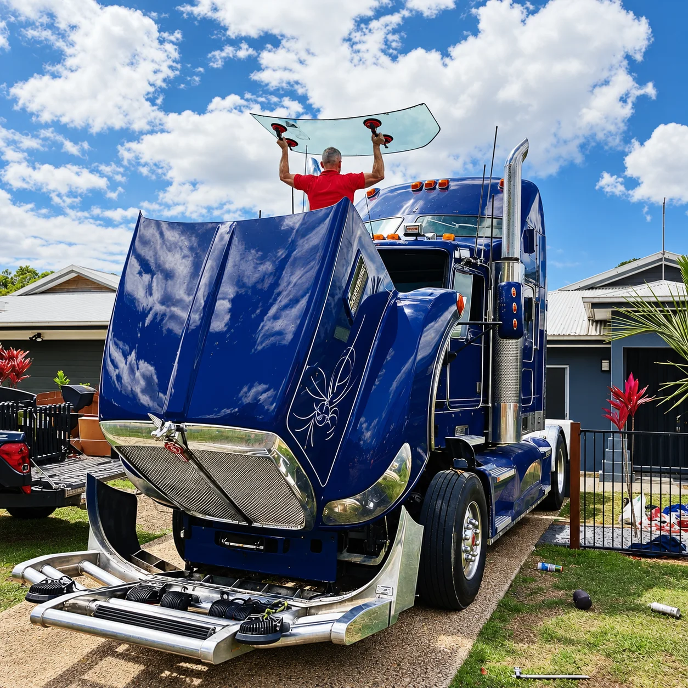
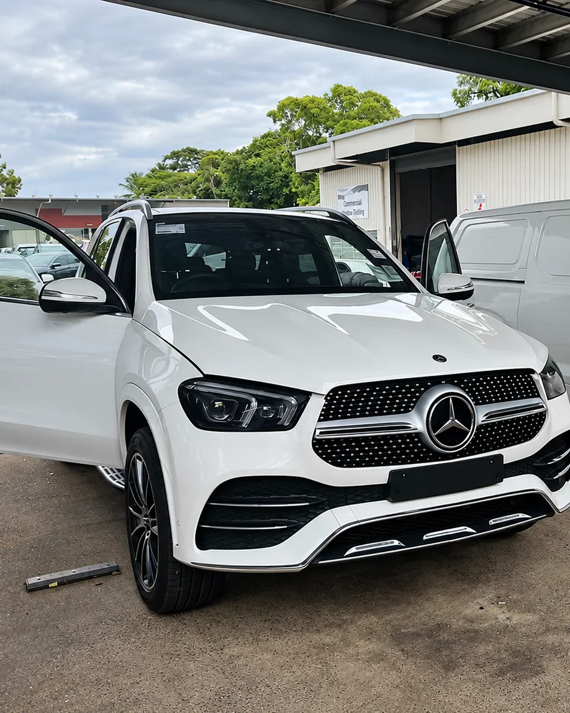

Windscreen replacement · Cairns
Windscreen
replacement
Cracked, chipped beyond repair or damaged windscreens replaced on cars, utes, 4WDs and trucks — all makes and models, in our Cairns workshop.
Replacement
When a repair
isn’t enough
Some damage can’t be repaired: long cracks, chips that have spread, or damage right in the driver’s line of sight. In those cases the safest fix is a new windscreen.
Frank removes the old screen, prepares the frame and fits the new glass, then checks the seal before the car goes back to you.
- All makes and models — cars, utes, 4WDs and trucks
- Done at our workshop on Bunda Street, Cairns City
- Call or text a photo for a quote

Recalibration
Camera
recalibration
Many newer vehicles have a camera behind the windscreen for safety features like lane keeping. After a new windscreen is fitted, that camera may need to be recalibrated so the features work as intended.
Ask Frank about recalibration when you book your replacement.
- Mention your vehicle’s safety features when you call
- We’ll let you know if your car needs it

How it works
From quote to clear glass
Send a photo
Call or text Frank with your vehicle and a photo of the damage.
Get a quote
We confirm the right glass for your make and model.
Book in
Bring the car to 209 Bunda Street at a time that suits you.
Drive away
New screen fitted and checked before you leave.
Questions
Good to know
Can my windscreen be repaired instead?
Small chips can often be repaired if they are dealt with early. Send a photo and Frank will tell you whether a repair or a replacement is the right call. See our chip repair page.
Do you do all makes and models?
Yes — cars, utes, 4WDs and trucks.
Where are you?
209 Bunda Street, Cairns City — next to Lifeline and across the road from Cairns Central.
How do I get a price?
Call or text 0431 185 183 with your vehicle details and a photo of the damage.
More from Frank
Other services


Need a quote?
Call or text Frank with your vehicle and a photo of the damage.